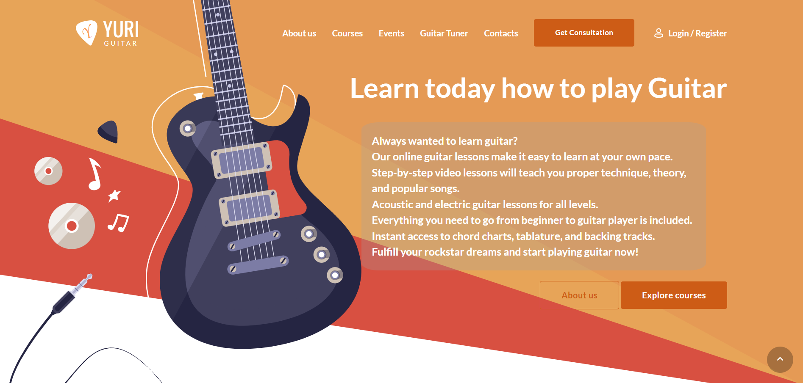
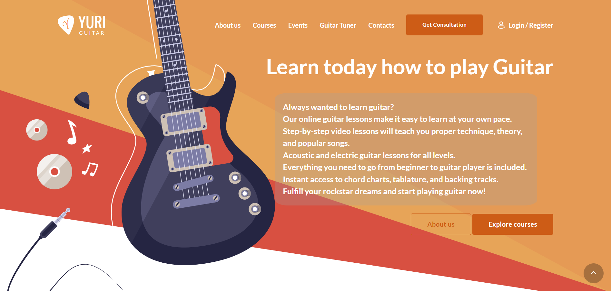
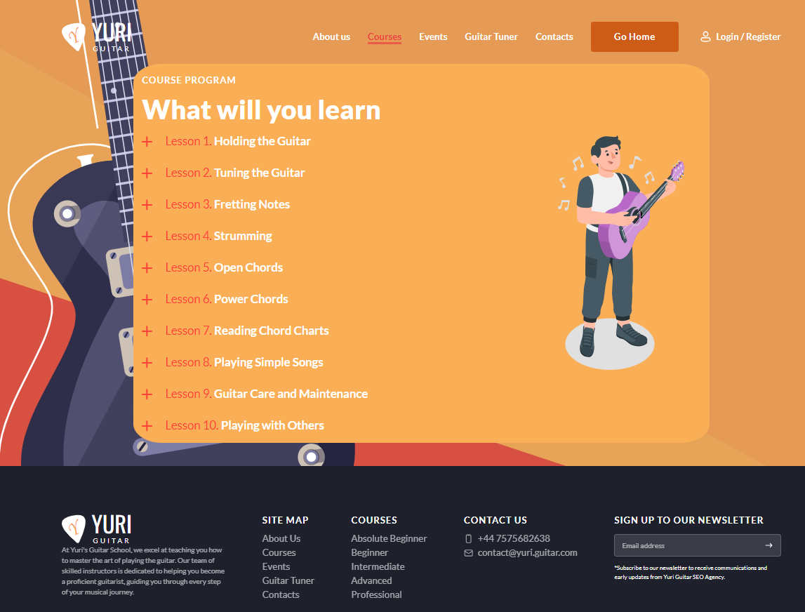

Yuri Guitar School Website Specification
Objective/Goals
The objective of the "Yuri Guitar School" website is to provide a comprehensive online platform for individuals
interested in learning how to play the guitar, while encouraging visitors to develop new interests, engage in
physical activity, and stimulate their intellectual thinking. The primary goals are:
- To offer high-quality guitar lessons and tutorials that serve as a gateway to exploring the world of music
and creativity.
- To inspire visitors to learn guitar and engage in active music-making and performance, encouraging physical
activity.
- To stimulate intellectual thinking by providing educational content on music theory, history, and cultural
aspects related to the guitar.
Key Audience(s)
The key audience for the "Yuri Guitar School" website includes:
- Beginners seeking step-by-step lessons to ignite their passion for guitar and music.
- Intermediate and advanced players who wish to expand their creativity and explore live performance
opportunities.
- Parents and guardians looking to involve their children in a holistic music education that includes both
theory and practice.
- Music educators and enthusiasts interested in the cultural and historical aspects of the guitar.
Persona 1: Beginner Bob
Age: 25
Background: A complete beginner in guitar, Bob has always wanted to learn to play.
Goals: Bob's primary goal is to learn the basics of playing the guitar and eventually
strum some of his favorite songs.
Challenges: Bob might feel overwhelmed by the complexity of the guitar initially and may
be looking for a structured and encouraging learning environment.
How Yuri Guitar School Can Help: Yuri Guitar School can provide Bob with a dedicated
section for absolute beginners, offering step-by-step lessons, chord charts, and interactive tools to
make his learning experience enjoyable and engaging.
Persona 2: Pro Musician Maria
Age: 30
Background: Maria is an experienced musician who plays guitar in a band.
Goals: Maria wants to enhance her guitar-playing skills, learn advanced techniques, and
find inspiration for her band's music.
Challenges: Maria might find it challenging to find lessons and resources that match her
skill level.
How Yuri Guitar School Can Help: Yuri Guitar School can offer Maria a dedicated section
for professional players, providing advanced lessons, masterclasses, and access to renowned guitar
instructors.
Persona 2: Ethan
Age: 16
Background: Ethan is a teenager who recently started learning the guitar. He's excited
to explore this new hobby.
Goals: Ethan's goal is to learn the basics of playing the guitar, strum some popular
songs, and have fun while doing it.
Challenges: Ethan is a complete beginner and needs beginner-friendly lessons and
guidance to get started.
How Yuri Guitar School Can Help: Yuri Guitar School can provide Ethan with a dedicated
section for absolute beginners, offering step-by-step lessons, chord charts, and interactive tools to
make his learning experience enjoyable and engaging.
Provisional Site Structure
The website will consist of the following content pages:
- About Us: Information about the school, instructors, and the mission to inspire creativity, musical
exploration, and learning.
- Courses: Categorized guitar lessons for different skill levels:
- Absolute Beginner
- Beginner
- Intermediate
- Advanced
- Professional
- Events: A page featuring information on upcoming music events and activities to encourage active
participation.
- Guitar Tuner: A working guitar tuner tool for users to tune their guitars and actively engage in
music-making.
- Contacts: A page for user inquiries, feedback, and support, fostering communication.
Here you can see the wireframes
!! Code for every page in folder 'website' !!
 Home
Home
 About Us
About Us
 Courses
Courses
 Events
Events
 Guitar Tuner
Guitar Tuner
 Contacts
Contacts
Courses page will have same design for every page

Media and Content Attribution
I sourced the images used on this website from Freepik.com. I embedded videos from YouTube using HTML code,
and I personally recorded and produced all audio content. I am committed to respecting copyright and
licensing standards while providing a rich and engaging learning experience.
From my perspective, it's important to mention that a significant portion of the images featured on this
website were either modified or created entirely by me. This reflects my dedication to crafting unique
visual elements and content that you see throughout the site, adding a personal touch to the user
experience.
Guitar Tuner Script
The guitar tuner script used on this website is available under a free license. You can find the licensing
details in the 'Tuner' folder, allowing you to review and understand the terms of use.
Functional Specification
The "Yuri Guitar School" website will feature the following functionality:
- User-Friendly Navigation: A clear and easy-to-use menu for easy access to all pages and resources.
- Interactive Forms: Separate forms for "Contacts" and "Events," for inquiries, feedback, support, and event
registrations.
- Multimedia Integration: Integration of audio and video players, as well as interactive elements that
encourage creativity and active participation.
- Responsive Design: The site will be designed to be accessible on various devices (desktop, tablet, mobile)
(adaptation.css)
to facilitate participation and exploration on the go.
- Guitar Tuner: A working guitar tuner tool for users to tune their guitars with the aid of audible sounds for
every string, making it easy to recheck the tuning.
Non-Functional Specifications
While the "Yuri Guitar School" website is primarily focused on providing a functional and interactive user
experience, it is equally important to consider non-functional specifications to ensure the overall performance,
security, and accessibility of the site. The non-functional specifications include:
- Performance: The website will be optimized for speed and responsiveness to provide a
seamless user experience. Pages should load quickly, and multimedia elements should play smoothly without
disruptions.
- Accessibility: The website will adhere to accessibility standards, ensuring that all users,
including those with disabilities, can access and navigate the site easily. This includes providing
alternative text for images and ensuring compatibility with screen readers.
- Scalability: The architecture of the website will be designed to handle potential growth in
terms of traffic and content. Scalability ensures that the site can accommodate an increasing number of
users and resources without performance degradation.
- Browser Compatibility: The website will be tested to ensure compatibility with major web
browsers, including Google Chrome, Mozilla Firefox, Apple Safari, Microsoft Edge, and Internet Explorer.
This ensures that users can access the site regardless of their chosen browser.
- Mobile Responsiveness: The site will be responsive and adapt to different screen sizes and
devices, including desktop computers, tablets, and mobile phones, to accommodate users on various platforms.
- Load Balancing: Load balancing mechanisms will be in place to distribute incoming web
traffic across multiple servers to prevent overload and ensure consistent performance, particularly during
peak usage periods.
Website Comparison - Yuri Guitar School vs. Competitors
| Website |
Site Address |
Strengths |
Weaknesses |
Opportunities |
| Yuri Guitar School |
Yuri Guitar School |
- Well-structured lessons for all skill levels.
- Built-in guitar tuner for user convenience.
- High-quality content and user-friendly design.
- A supportive and engaged community.
|
- Relatively new compared to established competitors.
- Limited brand recognition in the industry.
|
- Further differentiate by providing unique interactive features.
- Expand content and lessons for more in-depth coverage.
- Establish partnerships with known musicians or guitar instructors for added credibility.
- Leverage your responsive design to attract mobile users.
|
| Guitar World |
www.guitarworld.com |
- Comprehensive content and community.
|
- Overwhelming content, needs better user experience.
|
- Improve user experience and website design.
- Consider offering a balance of free and premium content.
- Create a more interactive and engaging learning environment.
- Explore partnerships with artists or influencers.
|
| Ultimate Guitar |
www.ultimate-guitar.com |
- Vast user-generated content.
|
- Cluttered interface, inconsistent accuracy.
|
- Improve user experience and website design.
- Consider offering a balance of free and premium content.
- Create a more interactive and engaging learning environment.
- Explore partnerships with artists or influencers.
|
| JustinGuitar |
www.justinguitar.com |
- High-quality lessons and YouTube presence.
|
- Less interactive, primarily structured lessons.
|
- Improve user experience and website design.
- Consider offering a balance of free and premium content.
- Create a more interactive and engaging learning environment.
- Explore partnerships with artists or influencers.
|
References